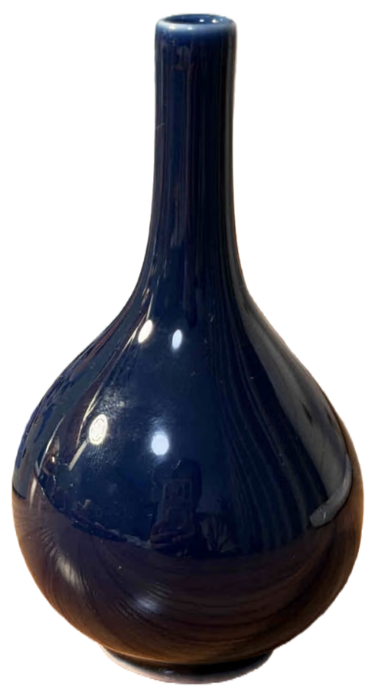
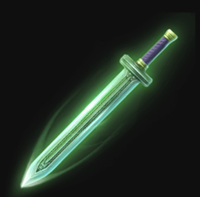
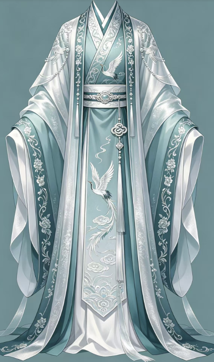
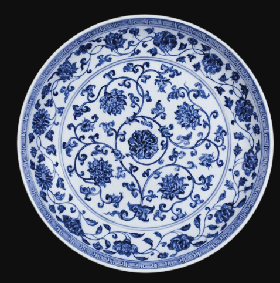
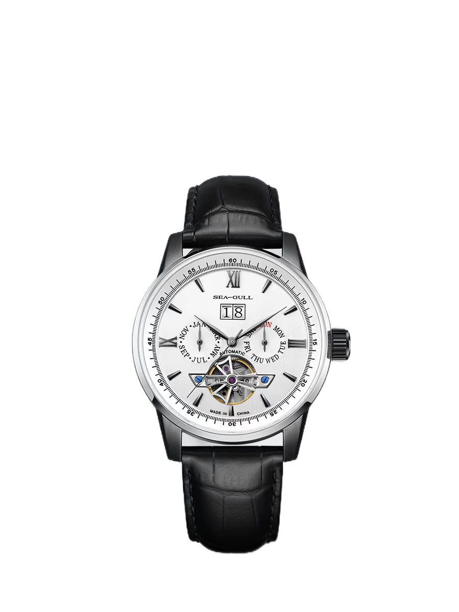
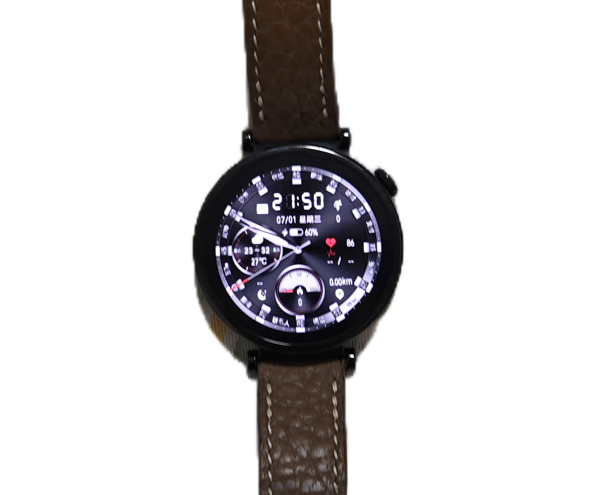
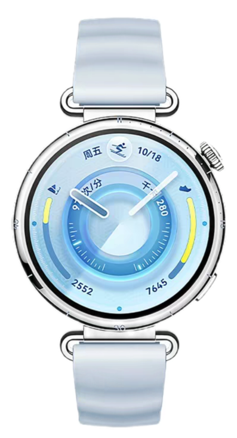
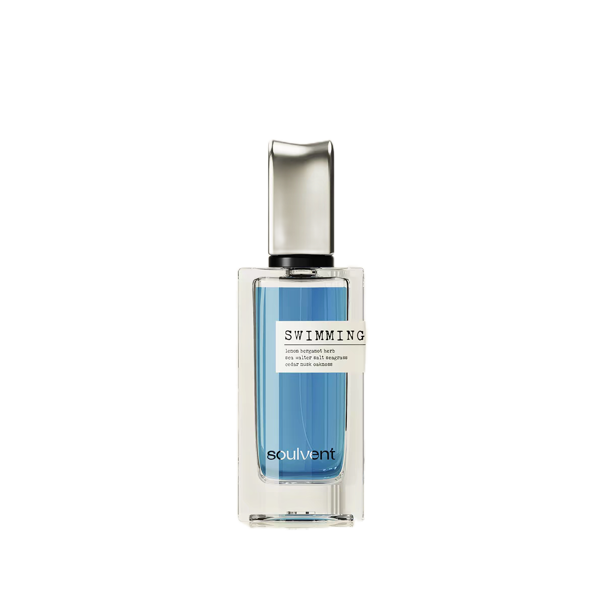

青花问道
——韩天尊有个快递，寄了好几千年
按住别松。韩天尊在灵界，信号大概有3秒延迟。
韩立：“听说你一直喜欢我的传记：《凡人修仙传》，觉得你要是来修仙一定比我更厉害，甚至惦记我老婆可爱……行吧，仙途漫漫，你先挑个法器。”

青竹蜂云剑
青蚕丝袍
青花瓷盘
韩立：“虚天殿的规矩，照执念前先过一道心关。这三样——哪块是你的？”

旧表
女士表
天蓝表
👆 拭去迷雾，可见执念

👇 点它
盘子是你调的蓝色。手表是她选的天蓝色。香水叫"一直游到海水变蓝"，像洁厕灵一样的蓝色。
道友您真的好喜欢蓝色哈哈哈，韩某先飞升了，剩下的你回去看她写给你的信。
道友您真的好喜欢蓝色哈哈哈，韩某先飞升了，剩下的你回去看她写给你的信。
嘿，凯哥：
法器盘子已经到你手上了啦，本地人果然有天赋啊，你家婉儿每天都在办公室陪你呢 ^_^
你跟我说过不喜欢现在的工作，可你日常工作很认真很有责任心，与人交往时也是人群里最有眼力见的高情商仔，连续三年拿了优秀，厉害厉害。研究生期间很痛苦，但是也顺利毕业了，还手握好几篇sci，大佬大佬。谈恋爱次数不多，但是很细心很温暖，很有执行力会照顾人也很可爱。某名人说过，能把不喜欢的事扛起来还做好的人，骨子里有东西。
你就很有点东西哦~
你说老了想去乡下隐居。行啊，到时候放一屋自己画的盘子杯子碗子，面朝大海，春暖花开。一直游到海水变蓝——不是游到海水真的变蓝，是游到你心里那片海，愿意看见它本来就是蓝的。突然想起来坝区泳池已经开放了，有一说一那泳池还挺蓝的，什么时候一起去吧。
似乎好像也许有点越来越喜欢你了。❤
——丝竹
法器盘子已经到你手上了啦，本地人果然有天赋啊，你家婉儿每天都在办公室陪你呢 ^_^
你跟我说过不喜欢现在的工作，可你日常工作很认真很有责任心，与人交往时也是人群里最有眼力见的高情商仔，连续三年拿了优秀，厉害厉害。研究生期间很痛苦，但是也顺利毕业了，还手握好几篇sci，大佬大佬。谈恋爱次数不多，但是很细心很温暖，很有执行力会照顾人也很可爱。某名人说过，能把不喜欢的事扛起来还做好的人，骨子里有东西。
你就很有点东西哦~
你说老了想去乡下隐居。行啊，到时候放一屋自己画的盘子杯子碗子，面朝大海，春暖花开。一直游到海水变蓝——不是游到海水真的变蓝，是游到你心里那片海，愿意看见它本来就是蓝的。突然想起来坝区泳池已经开放了，有一说一那泳池还挺蓝的，什么时候一起去吧。
似乎好像也许有点越来越喜欢你了。❤
——丝竹
点击盘子 · 看看婉儿说了什么
—— 给我家修仙不积极、画盘有待变积极、但人挺靠谱的小凯哥
修仙顺利，平安幸福
2026年6月29日
P.S. 香水在盒子下面那层。别光闻，记得喷。
韩立托我最后带句话：道友，你那份工作虽非仙途，但你做得不比修仙差。飞升了记得来灵界，包吃住。
修仙顺利，平安幸福
2026年6月29日
P.S. 香水在盒子下面那层。别光闻，记得喷。
韩立托我最后带句话：道友，你那份工作虽非仙途，但你做得不比修仙差。飞升了记得来灵界，包吃住。
长按此处保存卡片